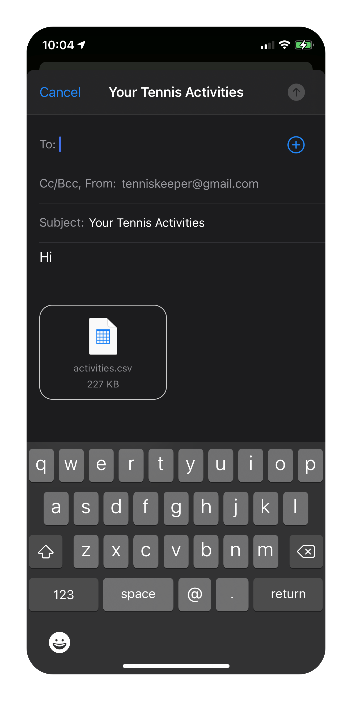

After tracking your racquet sports in TennisKeeper, you can export your data to a CSV file for further analysis. TennisKeeper supports the following exports:
To export the data, tap the Export button on the top right hand corner in the corresponding view to generate a CSV file:
The generated CSV file can be shared as an email attachment. Email the CVS file to yourself or others.
